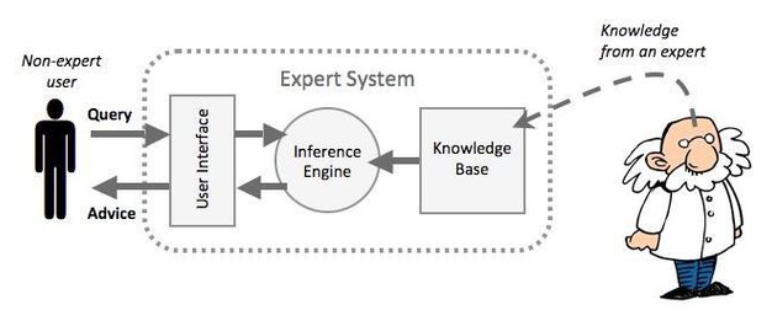
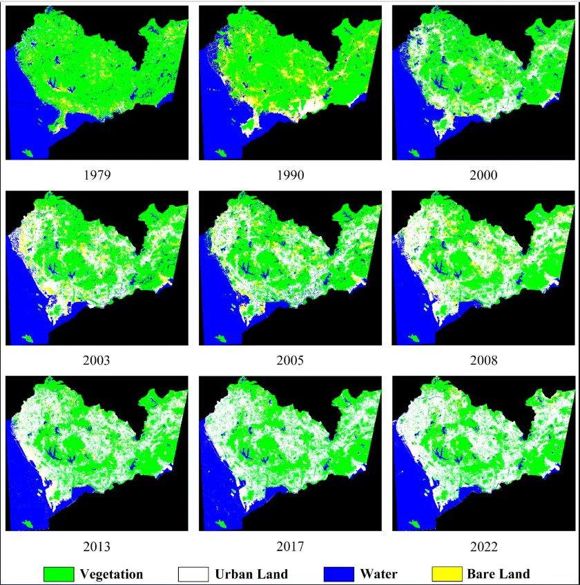
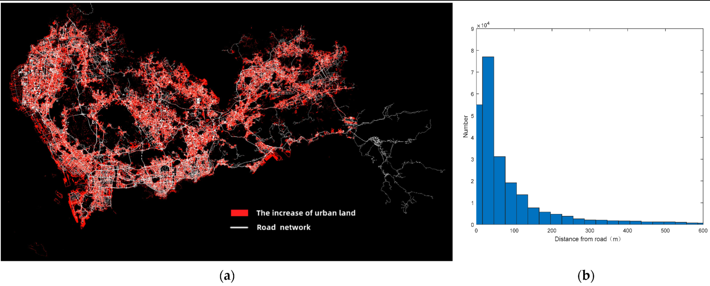

6 Classification I
6.1 Summary
6.1.1 Definition
PRODES and DETER = annual data or 250m resolution
Feature space = scattergram of two bands (or things that have been made into bands)
inductive learning = given context we can use experience to make judgement
In expert system:
Knowledge Base = Rules of thumb, not always correct
Inference Engine = Process of reaching a conclusion and the expert system is implemented
In machine learning:
- Machine learning = science of computer modeling of learning process
- Algorithmic approach = code to solve a solution
In classification and regression tree:
- Overfitting = leaf with just one person or one pixel value
- Bias = difference between predicted value and true value, means the model is oversimplified
- Variance = variability of model for a given point, if it’s large than means the model does not genearlise well
- Pattern vector = all the band values per pixel (could include texture etc)
6.1.2 Part 1: Review of how classified data is used
| problems | sensors |
|---|---|
| urban expansion | Landsat |
| Air pollution and LULC | Sentinel-3 & Sentinel-5 |
| Urban green spaces | Different sensors used for different mapping purposes, but can be mixed |
| Monitoring forests + illegal logging | Landsat (2000 to 2012) |
| Forest fires | Landsat TM 1984 |
6.1.3 Part 2: How to classify remotely sensed data
Past: Expert System

Now: Machine Learning
A search through all the data to explain the input data and can be used on new input data.
Classification and regression trees (CART)
\[\begin{cases} & \text{dicision tree: classify data into two or more discrete categories } \\ & \text{regression trees: predict continuous dependent variable } \end{cases}\]In a regression tree, if the result does not conform to linear regression, we can divide it into parts based on the threshold and calculate the sum of residuals squares, then use the best sum of residuals squares for all variables as roots and different values as leaves.
However, in practical applications, leaves may be discrete and continuous mixed together, so we use gini impurity to treat them so that they can be combined for identification.
Overfitting
But sometimes, the model may facing the problem called overfitting:
\[ \text{best model} \begin{cases} & \text{low bias = model the real relationship} \\ & \text{low variability = consistent predictions between datasets} \end{cases} \]
The solution to this problem:
Limit how trees grow (e.g. a minimum number of pixels in a leaf, 20 is often used)
Weakest link pruning (with tree score):
- use one less leaf, remove a leaf = sub-tree, SSR will get larger = termed PRUNING or cost complexity pruning
- Sum for the tree
- Tree score = SSR + tree penalty (alpha) * T (number of leaves)…lower better..
Random forest - Many better than one(Grow many classification decision trees)
- Use many trees, have each tree give a result, and then vote on the result
- Bootstrapping (re-sampling by replacement data to make a decision = bagging
- For each tree about 70% of the training data is used in the bootstrap, 30% is left out of the bag (OOB)
Maximum likelihood
Use probability to classify, it’s the data based with most probably to have the values in our pixel
Support Vector Machine (SVM)
A linear binary classifier - like logistic regression.
It finds the divide in the data (e.g. classes) and places a line at the division from the closest points.
Apply to imagery
\[\begin{cases} & \text{Supervised: Put known label onto new data(e.g. machine learning)} \\ & \text{Unsupervised: Categorize data with labels that are not known in advance(e.g. k-means)} \end{cases}\]6.2 Application
At present, classifier-related technologies have been widely used in image recognition in remote sensing. Considering only the application of land cover, there are many articles, which seem to be mainly divided into two categories, on the one hand, plaints cover(John Nay and Gilligan 2018; Stojanova et al. 2010), and on the other hand, remote sensing images of urban space(Ding et al. 2022).
Looking at the articles related to this, it can be seen that the development history of its entire discipline is roughly as follows:
When the remote sensing related to classifiers was just becoming popular, around the end of last century and the beginning of this century, researchers began to try to combine the two fields, such as Crawford, Tuia, and Yang (2013) using SVM and Friedl and Brodley (1997) using decision tree to process remote sensing images, and these papers generally focused on how to clean the initial data and model training, that is, the most basic model building and analysis process.
Later, as more and more people pay attention to this field, more authors begin to compare the processing effects of different machine learning methods and try to put forward suggestions for improvement. In Ramezan et al. (2021)’s article, random forest was a good classifier for large-area land-cover classifications, while Park et al. (2021) thinks XGBoost is a better model.
In recent years, deep learning has attracted the attention of scholars in this direction. The most basic CNN convolution(Kang et al. 2021), JDR based on CNN and MLP(Zhang et al. 2019), DBN (Lv et al. 2015)and other models have been considered and optimized in this direction. In fact, the results of these models are generally better than traditional machine learning.
6.3 Reflection
There is no doubt that the use of machine learning to distinguish remote sensing images is undoubtedly a very important part of remote sensing. Unfortunately, it seems that the problem related to deep learning was not mentioned in the lecture, although it is a hot topic in recent years. Among the research fields I mentioned before, I am most interested in the research topic of Ding et al. (2022). Through the analysis of remote sensing images in different periods, they clearly reflect the relationship between natural environment and urban expansion, which is undoubtedly one of the important roles of remote sensing in urban analysis.

The land cover maps in Shenzhen from 1979 to 2022.
In addition, this paper also reflects the relationship between different areas within the city through remote sensing images, and this discussion of taking into account social development and natural environment is, in my opinion, the mainstream direction in the coming decades.

The relationship between transportation and urban land increase from 1979 to 2022. (a)The road network overland on the map of urban land expansion. (b) The transportation distance histogram for urban land increase.